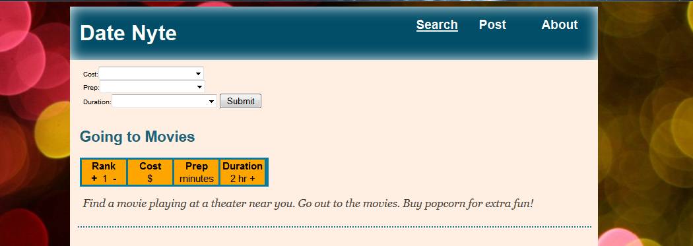
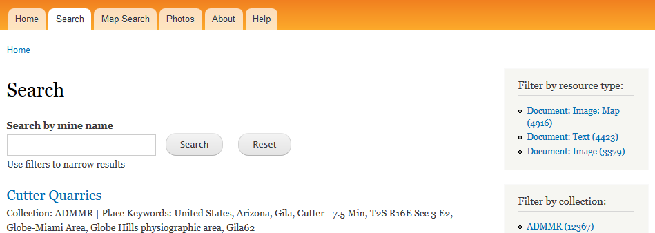

Projects
-

Blogs and magazines tout 25, 50 or 100 great date ideas, but what if you just want to see inexpensive dates or those requiring minimal planning? Search Date Nyte.
Created using PHP, Mysql and Javascript
-

The AZGS inherited thousands of documents about the State's mines. They needed a way for customers to find documents by name, location, commodity or document type.
Created in Drupal. The main modules are GMap, Location, Feeds and Search API
-

A personal project to create flashcards from structured text, in this case tab delimited questions and answers.
Created using jQuery